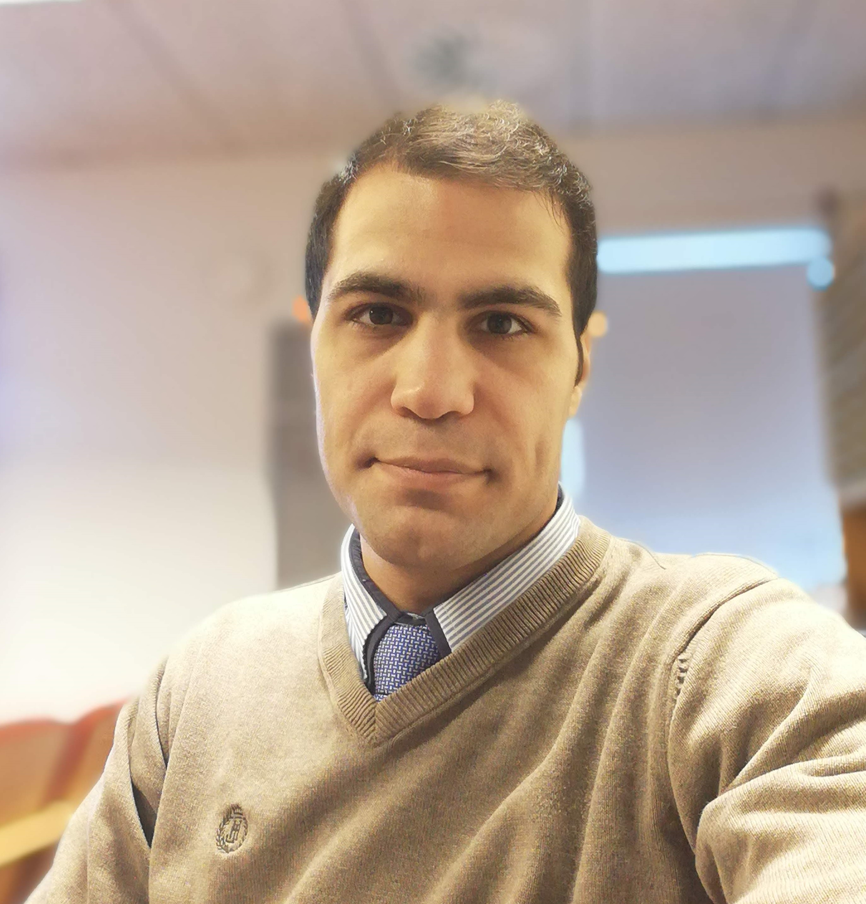

Jeg kan godt lide at kode, jeg er selvmotiveret og brænder for programmering. Jeg ved, hvordan computere fungerer og forstå hvad der sker, når du bygger en app, fordi jeg har en baggrund på universitetet hvor jeg lærte assemblysprog, maskinsprog, algoritmer, C++, C#, databaser, hardware osv. Jeg elsker lære mere og mere om udvikling og programmering. da jeg endda var omkring 14 år gammel, jeg kunne slette alle computerdata og derefter oprette partitioner, installere Windows 98 eller XP til det og jeg lærte også lidt at kode med QBasic.

Sina Nejadbakhtiari
 Børkop,
Vejle71614567snejadbakhtiari@gmail.com
Børkop,
Vejle71614567snejadbakhtiari@gmail.com
.png) linkedin.com/in/sina-nejadbakhtiari-88621089github.com/SinaNBA
linkedin.com/in/sina-nejadbakhtiari-88621089github.com/SinaNBA
Skills
Sprog
Uddannelser
Kurser
Profil
Junior Udvikler
Erhvervserng
juni 2012 - juli 2018
Client Application Support
- Zaman Computer Co.
- Software Co.
Værkstedsleder
- Gaam electric co.
- Svejsning og Skæring Co.
Junior Site Manager
- Petro saz ab Co.
- petrokemisk Co.
september 2020 - nuværende
Praktik
- Miljø og natur
- Vejle Kommune
Rengøring og Vinduespolering(nuværende)
- Birns Rengøring
- Rengøringsfirma